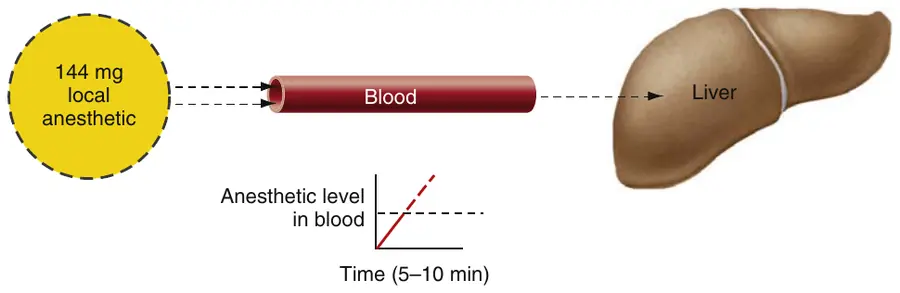
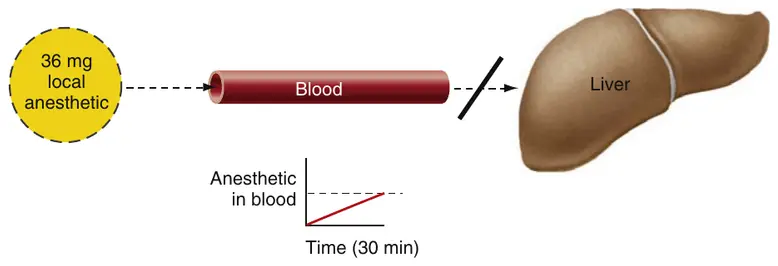

نسخه استخراجشده؛ ترجمه یا تأیید علمی انجام نشده است. وضعیت: captured
مرد ۶۲ سالهای با نارسایی قلب برای کشیدن چند دندان آمده است. طی ۲۰ دقیقه هفت کارپول لیدوکائین ۲٪ ساده گرفته. حالا پرحرف و بیقرار شده و پلکهایش میپرد. چه چیزی سطح دارو را اینقدر بالا برده است؟

مسمومیت (overdose) یعنی علائمی که از سطح خونی بیش از حد دارو در اندامهای هدف میآید. اندام هدف بیحسی موضعی، مغز و قلب است. مسمومیت به دوز وابسته است و شایعترین واکنش ناخواستهی واقعی به داروهاست.
در حالت عادی دارو پیوسته از محل تزریق جذب میشود و همزمان با پخش شدن در عضله و چربی و تجزیه در کبد از خون برداشته میشود. تا این تعادل برقرار است، سطح خونی زیر آستانه میماند. واکنش فقط تا وقتی ادامه دارد که سطح دارو در اندام هدف بالای آستانه باشد.
در دندانپزشکی، حجم زیاد بیحسی شایعترین علت مسمومیت است.
نکتهی طلایی: بیماری کبد منع مطلق بیحسی آمیدی نیست. در بیمار سرپایی ASA II یا III با کمترین حجم مؤثر و با احتیاط بزن. بیحسیهای استری در پلاسما با سودوکولیناستراز و آمیدها در کبد تجزیه میشوند.
